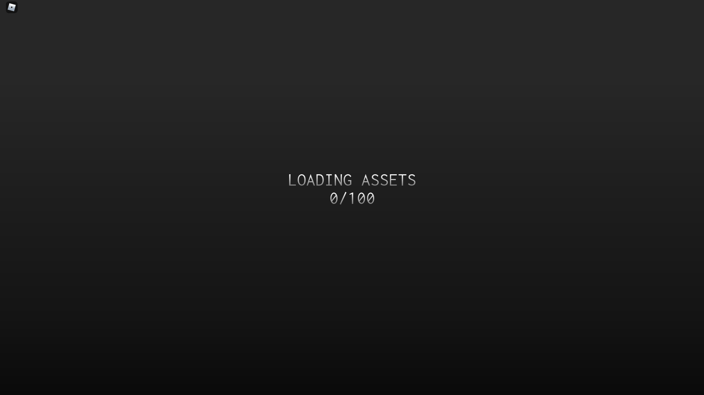
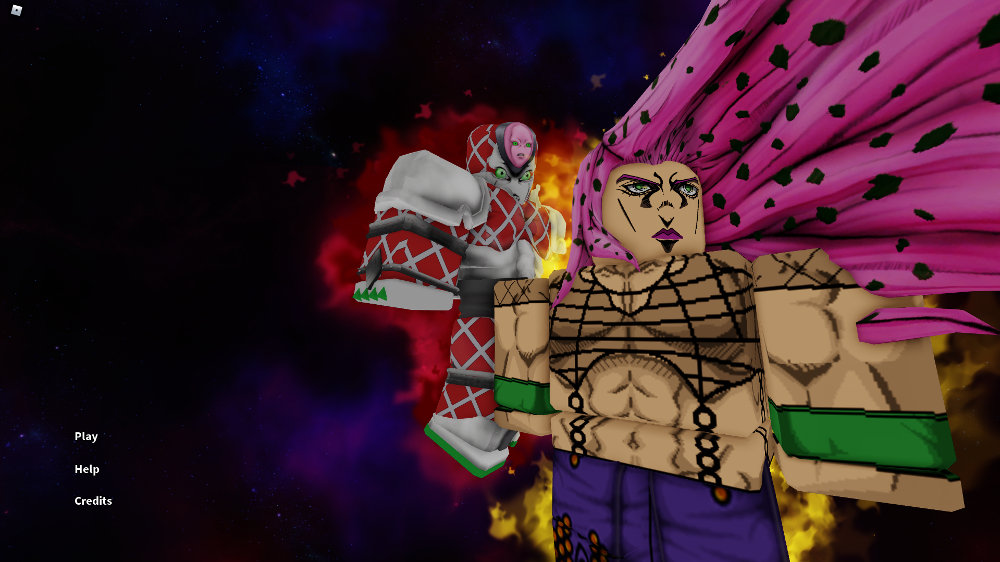
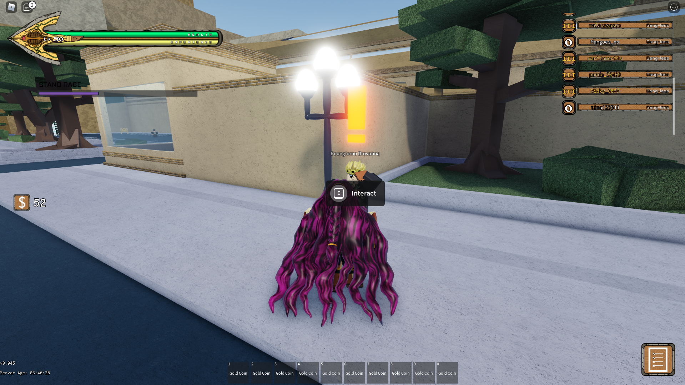
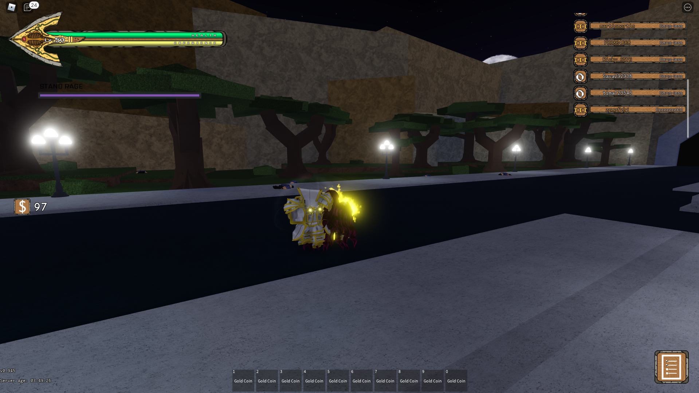
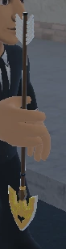
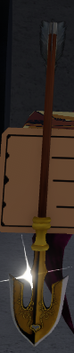
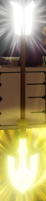
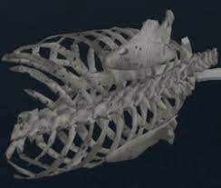

Это новая юба вики для новичков,которым не нравится уже существующие вики из-за незаконченых страниц или егор гей.
это пример скина на стенд made in heaven
Сегодня мы рассмотрим сюжетную часть юбы
встречает нас юба загрузочным экраном
после этого мы перемещаемся в главное меню
дальше мы появляемся на железнодорожной станции около Джорны Джованны, можете не обращать внимания на странные имена стендов и нпс, названия такие только из-за ап.
с Джорно как ни странно надо поговорить
после этого он даст вам задание на устранение 5 охранников
без стенда будет сложно, но у вас есть блок на букву F
после выполнения задания у вас появится стрела, это единственная stand arrow.
она дается за начальный квест дальнейшее открытие будет поддерживатся mysterious arrow, rib cage, lucky arrow.
это mysterious arrow
это lucky стрела, у нее 90% на выпадение скина
это rib cage, с нее можно выбить 4 стенда из 7 части джоджо steel ball run
 Ссылка на дискорд